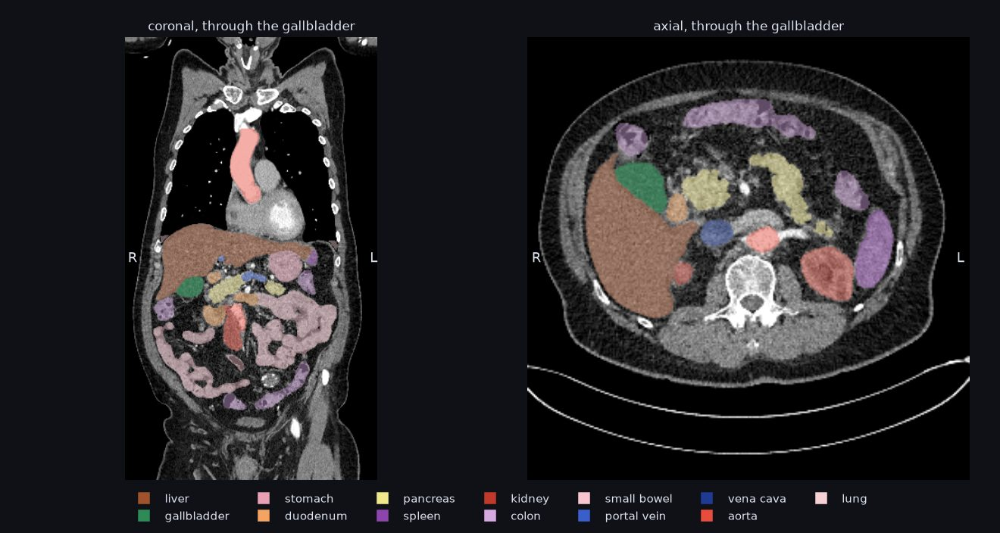
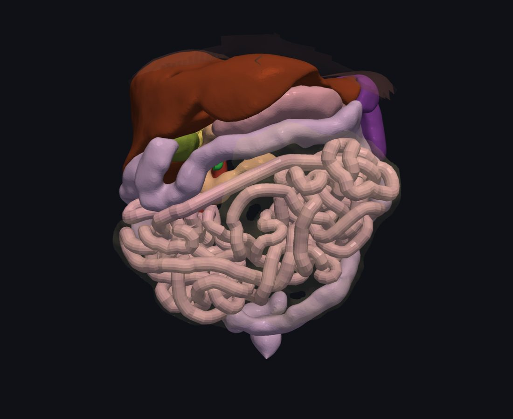
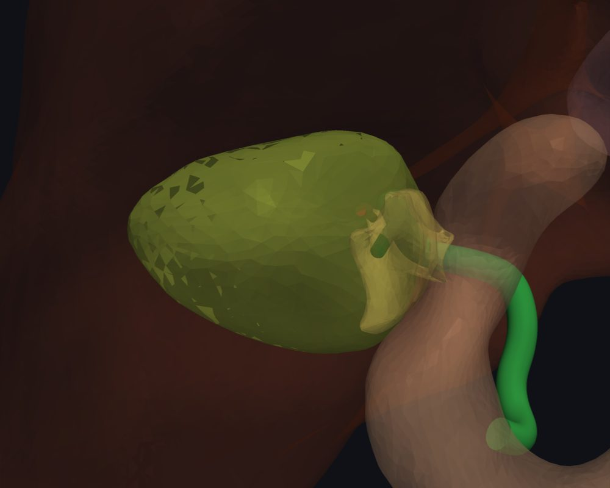
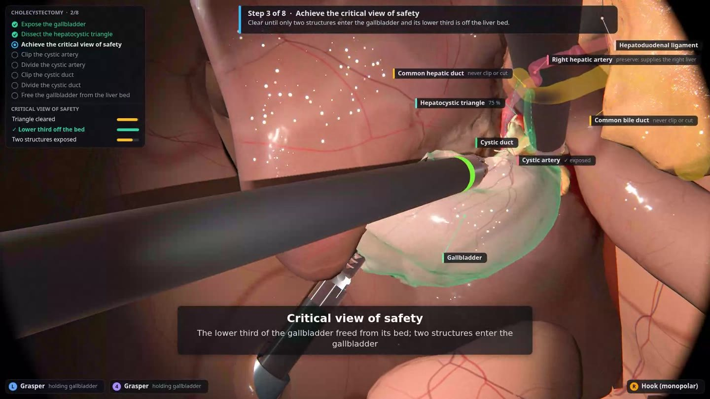

CT to patient scene
One pipeline turns a contrast CT of the abdomen into a scene SOFA can run: the organs the CT shows, segmented with the open TotalSegmentator tasks, and the structures it does not show, synthesised to fit between them.

From voxels to meshes
- Segment. TotalSegmentator's open tasks only:
totalplus body, vertebrae, trunk cavities, abdominal muscles, liver vessels, liver segments and lung vessels. No licensed task is used, so the trunk has no separate skin or subcutaneous-fat labels and the heart is one label. - Fuse the masks into one label map, extract surfaces and build tetrahedral meshes for every soft organ.
- Check eligibility: a liver of at least 500 ml and a gallbladder of at least 5 ml; liver, gallbladder, duodenum and stomach found and not cut by the scan's edges.

What CT does not show
The small structures a surgeon works on in a cholecystectomy are below CT's resolution or not contrasted. The pipeline synthesises them from the patient's own organs:
- The biliary tree: the common, cystic and hepatic ducts and the cystic artery, routed through the free space between the organs on a 1 mm signed-distance grid (a minimum-cost path, each bead's surface kept 1 mm off every organ): a supraduodenal junction, the common duct behind the duodenum to the papilla, the artery from beside the common hepatic duct, at least 6.5 mm from the cystic duct, into the gallbladder's free surface.
- The hepatocystic fat of Calot's triangle as a sheath round each duct and the artery, which the hook dissects.
- The diaphragm, the falciform ligament and the greater omentum.
- The small bowel traced as self-colliding tubes whose loops slide on each other.
- The liver's portal and hepatic venous trees: a cut bleeds from the vessels it crosses.
- Breathing, organ attachments and the gallbladder's bed bonds, each holding a small surface patch.


Anatomy variants and patients
The same pipeline builds every scene in the release from the public TotalSegmentator dataset (CC BY 4.0): the male reference patient (subject s1379), a second male (s1124) and a female patient (s1404), the cholecystectomy's four anatomies of Calot's triangle and a double cystic artery, the appendectomy and the basic-skills boards.


Ports
A patient's ports are chosen on the exposed anatomy: the abdomen insufflated, the laparoscope docked, the fundus retracted and the neck held. Every skin point's straight lines to the targets (the hook's ring, the bed, the neck, the fundus, the laparoscope's view) are scored with every organ as an obstacle, under the layout rules of the robot's arms.